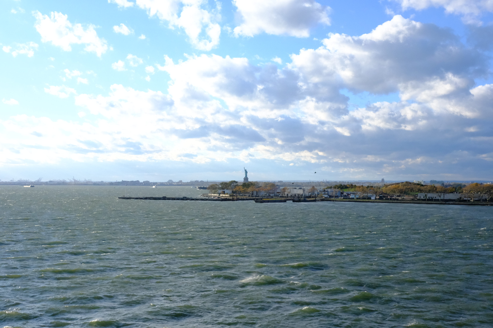
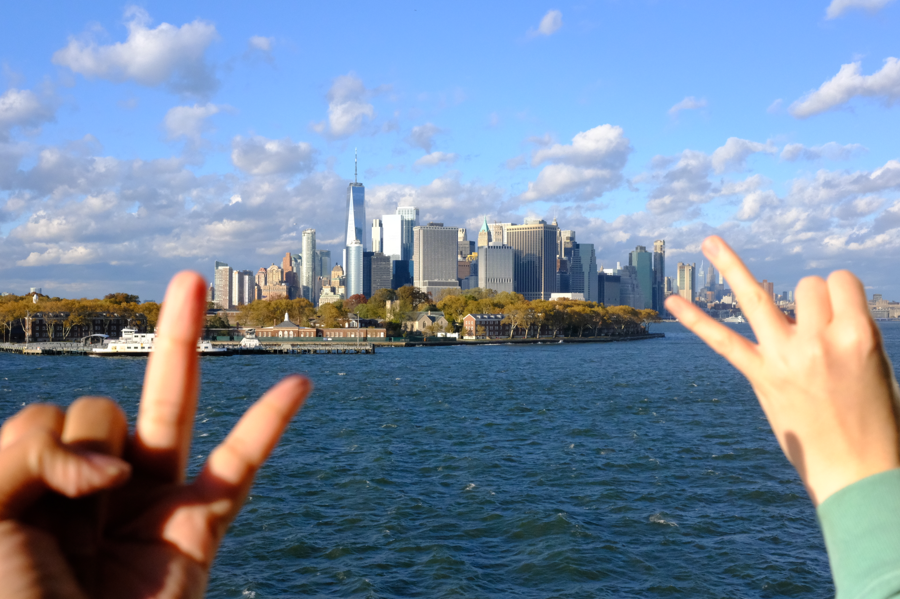
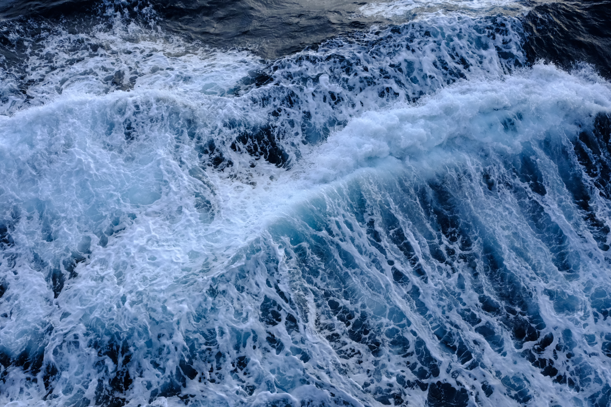

#OSC002
A Re-Introductory Post — ANZOL
May 5th, 2026
Just kidding!
We emigrated to Amsterdam sort of suddenly, due to Spanish beaurocracy being what it is, and Dutch Efficiency also being what it is.
We were able to move here and open our business within around 6 months.
HARMONIC OSCILLATOR became a Dutch company on October 25th !!!
It's so ridiculously exciting to be able to pursue our dreams somewhere that, incidentally, we really like and would like to stay in. (Unusual feeling for a nomad.)
We didn't know anything about the Netherlands previous to living here, but it's a really nice place. I've got a lot of nice things to say about it!
We emigrated by sea, which was especially inspiring for our upcoming title... But also, we just really like water. And fish. We saw a lot of water and we saw some fish. I spent the entire passage staring at the waves and doing nothing else. It also gave the emigration the real sense of moving very far away, because you can see and feel yourself crossing the Earth slowly.


On the topic of game dev...
Our main project, Subcircus, has been put on the backburner for now, and due to needing to get a game out in a shorter time frame,
we're flipping my little pet project into our first release!
Honestly, feels like a blessing in disguise, because Subcircus has had
a couple years of development already, so like, putting it down for a bit gives it some space to breathe and marinate. When we pick it
back up later it'll sort of feel like, "Whoa, this project is further along than I remember." We can just jump right into production with it!
I'd like to get some dev logs for O For Tuna rolling, but as I have previously stated, I'm not very used to writing entries like this. I'm working my way up to it...
The reason I'd like to make dev logs is, as an indie dev, I've really enjoyed some other indie dev logs, they're inspiring. I can oftentimes relate to the tone, and it
humanizes the process of just, being a crazy person (or a small group of crazy persons) who is trying to create a thing over a long period of time. I want us to be able to provide something
similar for other aspirant indie devs!!

See you around!
ANZOL